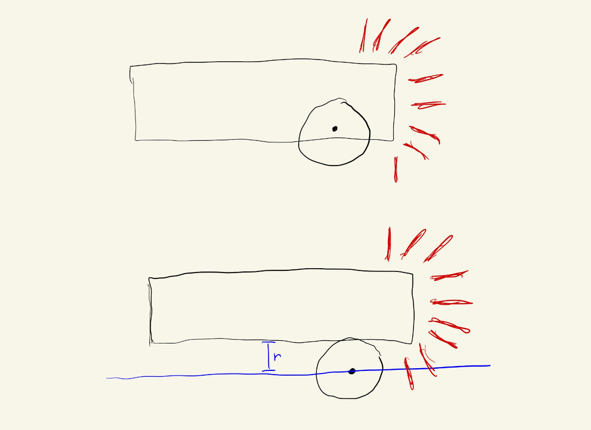
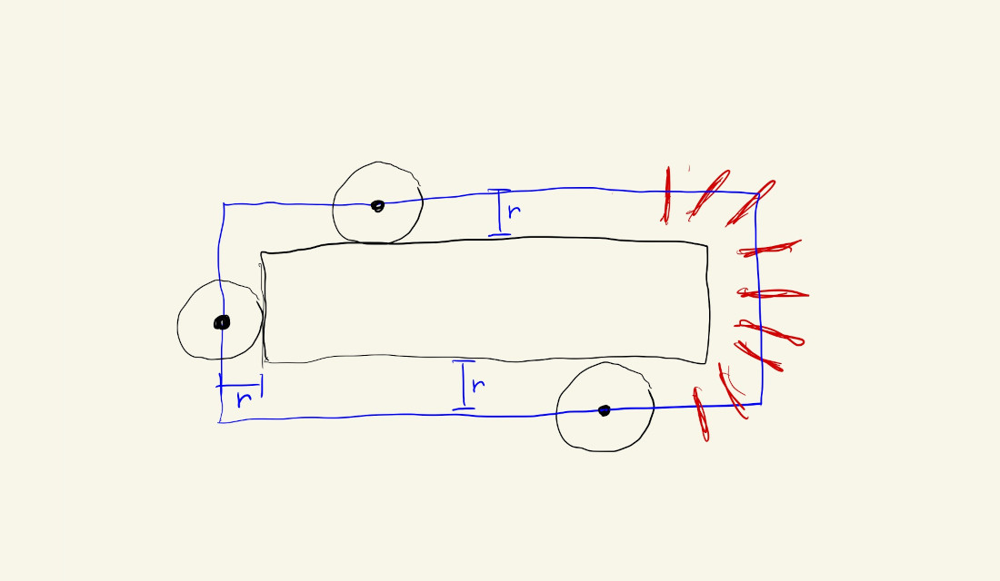

Now that we’ve seen how to create variables to keep track of changing values and parameters in our code, let’s see how they can be used in boolean expressions to create interactive shapes.
Let’s start with a square, centered on our canvas. Notice the use of variables for setting the location and dimensions of the rect(). This will be important soon.
Now, let’s say we want to detect when the mouse is inside the square and change its color from white to gold.
Our code structure could look something like this:
if (mouse is inside the square) {
fill(gold);
} else {
fill(white);
}
rect(rectX, rectY, rectWidth);
We use the if() statement to specify that we have some code that shouldn’t be executed every time, but instead should only run if certain conditions are met. In our case we only want to execute the fill(gold) command if the mouse is inside the square during that iteration of our draw() loop. In case the mouse is not inside the square during a given iteration, the if condition is not met and the code specified by the else statement gets executed instead.
Now we just have to figure out exactly how to calculate when the mouse is inside the square during an iteration of our draw() loop.
We know that the mouseX and mouseY variables always hold the current location of our mouse, so we could use them to determine where the mouse is in relation to each of the four edges of the square.
Let’s start with the leftmost edge. For the mouse to be inside the square, its x-position has to be to the right of the square’s leftmost edge. Since we have a variable for the x-position of the square this can be determined by asking the computer:
if(mouseX > rectX)
As we move the mouse around the canvas we’ll notice that, yes, the square changes color when the mouse goes from the left side of the canvas into the square, but it also stays gold when the mouse exits on the right side, or when the mouse is above or below the square. Let’s fix that.
Focusing on the x-direction only, the logic we want to implement could be described in words as: “fill the square with gold as long as the mouse is between the left and right edges of the square”.
This could be expressed as the following equation:
leftEdge < mouseX < rightEdge
Unfortunately we can’t just put a double conditional like that inside an if() statement, but we can break it up using boolean logic. Since we want both conditions to be true, this is equivalent to:
leftEdge < mouseX AND mouseX < rightEdge
And this can be rearranged a bit to improve legibility, as “mouse is greater than left edge AND less than right edge”:
mouseX > leftEdge AND mouseX < rightEdge
We don’t have the location of the rightmost edge, but we can calculate it from the rectangle’s x-position and its width:
let rightEdge = rectX + rectWidth
Putting it into JavaScript and using our variables this becomes:
if(mouseX > rectX && mouseX < rightEdge)
Better! But the square is still gold when the mouse is directly above or below the square.
We can go through the above reasoning again, but this time including the y-direction as well.
A phrase that could describe what we want could be something like: “fill the square with gold if the mouse x-position is between the left and right edges of the square AND the mouse y-position is between its bottom and top edges”.
The logic in pseudo-code would then be:
mouseX > leftEdge AND mouseX < rightEdge AND
mouseY > topEdge AND mouseY < bottomEdge
The y-direction logic statements (mouseY < bottomEdge) look “upside down”. We want to detect when the mouse is above the bottom edge, not below!
This is actually correct the way it is though because mouseY grows towards the bottom of the screen.
We just have to declare a bottomEdge variable and our JavaScript could look like:
if (mouseX > rectX && mouseX < rightEdge &&
mouseY > rectY && mouseY < bottomEdge)
The if() statement in the code above is actually one long line, but the editor has separated it into more lines for better legibility.
Since we used variables to define all of the parameters for our square, we could easily change its dimensions and move it anywhere else on the screen by only changing its parameters rectX, rectY, rectWidth and rectHeight:
We can even extend it to multiple shapes:
There is a lot of repeated code here, which makes the sketch look messy and more complicated than it is.
We’ll later see how to use functions, arrays and objects to clean this up and make it easier to understand, extend and maintain:
This kind of logic is actually a common pattern in certain types of programming. It’s useful not just for detecting when our mouse is over objects, but also for detecting when different shapes overlap or collide, like in a video-game.
In the sketch below, can we detect when our circle overlaps with the rectangle?
We can start with the logic from before, except it won’t detect when the circle overlaps with the rectangle, only when the center of the circle goes inside the rectangle.
If we look at a diagram of what’s happening and what we want to happen, we can see that instead of detecting when the center of the circle is inside the rectangle, we should instead detect when the center of the circle is within \(r\) pixels from the edge of the rectangle (where \(r\) is the circle’s radius, or, half of its diameter):

If we extend the drawing to consider all four sides of the rectangle, we get something like this:

This looks exactly like our original situation of detecting whether the center of the circle is inside a rectangle, but now we just have to use a bigger rectangle.
We can create some new variables for our new overlap rectangle:
let ellipseRadius = ellipseDiam / 2;
let oRectX = rectX - ellipseRadius;
let oRectY = rectY - ellipseRadius;
let oRightEdge = rightEdge + ellipseRadius;
let oBottomEdge = bottomEdge + ellipseRadius;
And update the variables in the if() statement, but the logic is exactly the same:
if (mouseX > oRectX && mouseX < oRightEdge &&
mouseY > oRectY && mouseY < oBottomEdge)
It would be a nice touch to have the circle and rectangle turn different colors when they overlap.
We could do that by repeating the detection logic before drawing each shape:
// draw rectangle
if (mouseX > oRectX && mouseX < oRightEdge &&
mouseY > oRectY && mouseY < oBottomEdge) {
fill(rectColor);
} else {
fill(255);
}
rect(x,y,w,h);
// draw circle
if (mouseX > oRectX && mouseX < oRightEdge &&
mouseY > oRectY && mouseY < oBottomEdge) {
fill(rectColor);
} else {
fill(255);
}
ellipse(mouseX, mouseY, diam, diam);
But, this is unnecessary and makes our code harder to read.
What we can do instead is calculate the overlap logic once, and save the result in a variable that we can check multiple times inside our draw() loop:
let overlap = mouseX > oRectX && mouseX < oRightEdge &&
mouseY > oRectY && mouseY < oBottomEdge;
This could still be improved to account for the cases where it wrongly detects an overlap when the circle moves near the corners of the rectangle (a literal corner case), but we’ll wait until we see functions and a little bit of trigonometry.